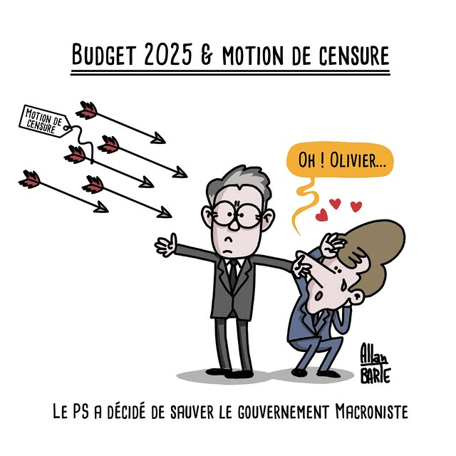

Est-ce que ces images sont vocalisables par le lecteur d'écran ?
Ce bouton permet d'afficher les images afin que les personnes qui testent
l'accessibilité des images sachent à quoi ressemblent les images si on ne
les décrit pas correctement.

Si l'image est purement décorative, laissez l'attribut alt
vide.
En renseignant une alternative textuelle, vous permettez le
référencement (SEO) de vos images.